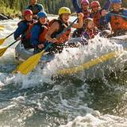
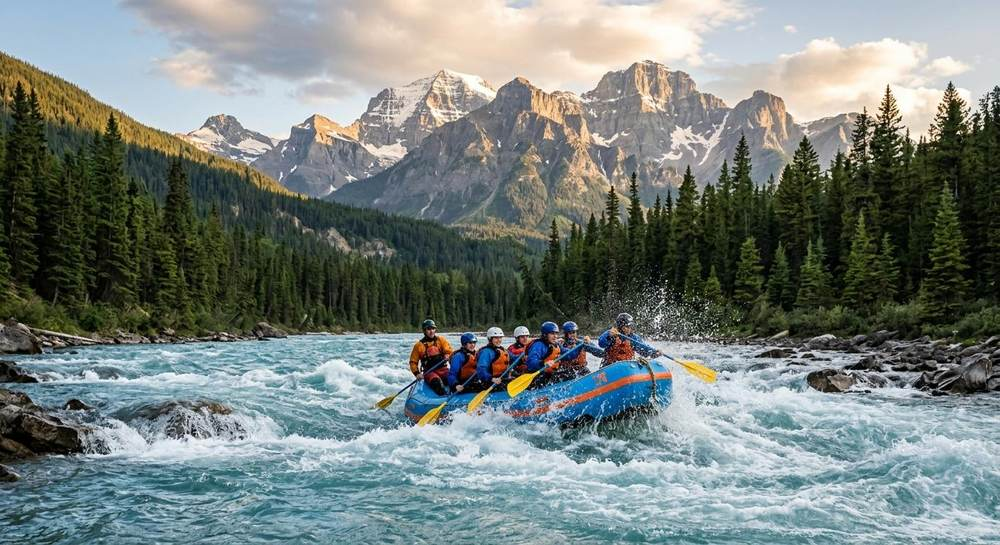
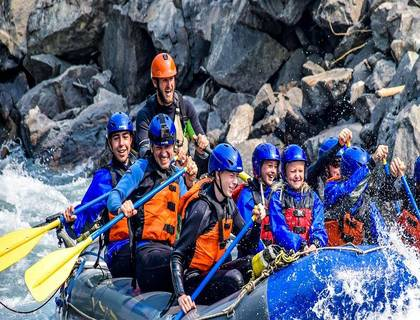
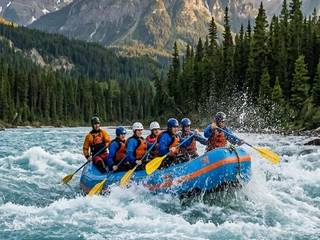
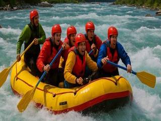
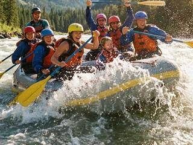
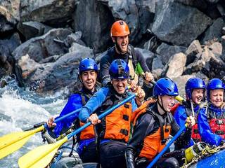
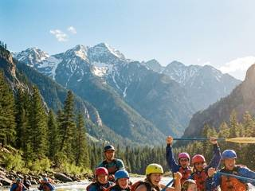

We guide every guest through unforgettable river adventures with safety, teamwork, and respect for the wild places we paddle. Come explore the river with our expert guides!


We guide every guest through unforgettable river adventures with safety, teamwork, and respect for the wild places we paddle. Come explore the river with our expert guides!
White Water Rafting began with a small group of river guides who loved the outdoors and wanted to share it. With a couple of rafts and a lot of determination, they started leading guests down the rivers they knew best.

Today our certified guides carry that same spirit onto every trip, from gentle family floats to heart-pounding rapids. We still put safety first and leave every river just as we found it.




